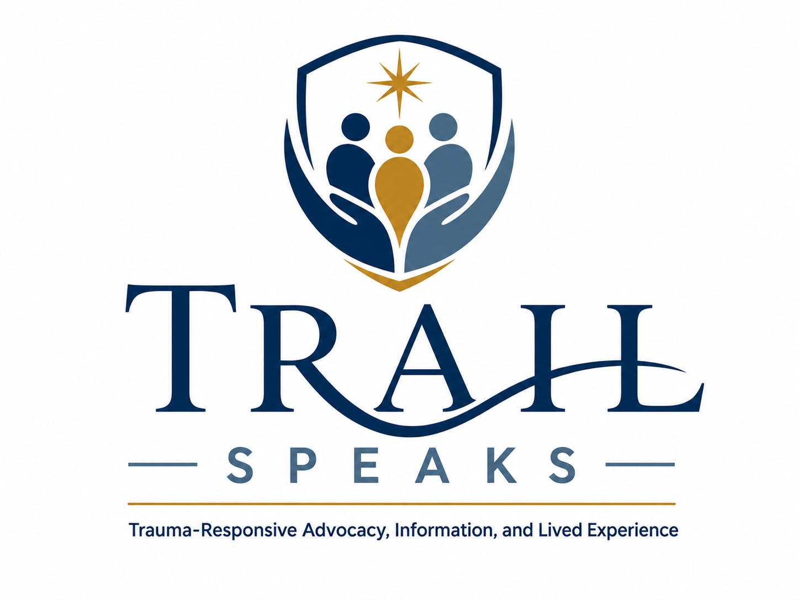

Research
TRAIL Lab
Trauma Research in Adaptation, Innovation, and the Life Course
Trauma-focused research on coping, victimization, offending, justice involvement, practitioner experiences, systems response, and life-course outcomes.
Visit TRAIL LabTrauma • Research • Advocacy • Impact • Learning
The TRAIL Center is an independent trauma-focused center that translates trauma knowledge into action through research, advocacy, education, support, and systems change.
Purpose
The TRAIL Center exists to bridge the gap between trauma knowledge and systems-level action. Through its four branches, the Center conducts research, develops trauma-responsive education, supports people affected by trauma, and advances institutional change through programs, policies, procedures, protocols, and practices.
Our work is grounded in the belief that trauma is not only an individual experience. It shapes families, communities, institutions, systems, and life-course pathways. TRAIL Center creates practical pathways for understanding trauma and responding to it with dignity, accountability, and meaningful change.
Trauma, Research, Advocacy, Impact, and Learning
A four-branch structure designed to connect knowledge, support, education, and institutional change.
Welcome
Learn how the TRAIL Center turns trauma knowledge into research, advocacy, education, support, and systems change.
Four Branches
Each branch provides a different pathway for advancing trauma-responsive knowledge, support, education, and change.
Research
Trauma Research in Adaptation, Innovation, and the Life Course
Trauma-focused research on coping, victimization, offending, justice involvement, practitioner experiences, systems response, and life-course outcomes.
Visit TRAIL Lab
Support & Advocacy
Trauma-Responsive Advocacy, Information, and Lived Experience
Support, advocacy, mentorship, resources, workshops, and lived-experience-centered programming for people affected by trauma.
Visit TRAIL SpeaksTraining & Education
Trauma-Responsive Approaches to Instruction and Learning
Training, workshops, curriculum, and professional education that help people and organizations build trauma-responsive practice.
Visit TRAIL AcademyPolicy & Systems Change
Trauma-Responsive Action for Institutional Improvement and Leadership
Systems-change work focused on policies, procedures, programs, protocols, organizational practices, and institutional improvement.
Visit TRAIL ForwardWho We Serve
Victims and survivors
Justice-involved individuals
Practitioners and agencies
Advocates and service providers
Students, researchers, and educators
Communities affected by trauma
Whether you are interested in research, training, support, collaboration, or systems change, the TRAIL Center provides multiple pathways for involvement.